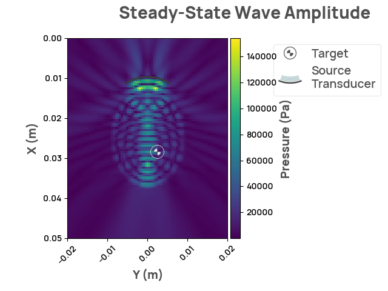

Note
Click here to download the full example code
Reading simulation metrics
Note
NDK and its examples are under constant development, more information and content will be added to this example soon!
This example demonstrates how to display the metrics collected from the simulation.
Rendering scenario
import neurotechdevkit as ndk
scenario = ndk.built_in.Scenario0()
scenario.make_grid()
scenario.compile_problem()
result = scenario.simulate_steady_state()
assert isinstance(result, ndk.results.SteadyStateResult2D)
result.render_steady_state_amplitudes(show_material_outlines=False)

Out:
Estimated time to complete simulation: 44 seconds. Memory required is 8.09906664298232 GB (available 73.624408064 GB). These values are approximated.
/home/circleci/.cache/pypoetry/virtualenvs/neurotechdevkit-3aSsmiER-py3.10/lib/python3.10/site-packages/devito/finite_differences/differentiable.py:224: DeprecationWarning: NotImplemented should not be used in a boolean context
return super(Differentiable, self).__eq__(other) and\
/home/circleci/.cache/pypoetry/virtualenvs/neurotechdevkit-3aSsmiER-py3.10/lib/python3.10/site-packages/devito/finite_differences/differentiable.py:224: DeprecationWarning: NotImplemented should not be used in a boolean context
return super(Differentiable, self).__eq__(other) and\
Printing metrics
for metric, metric_value in result.metrics.items():
print(f"{metric}:")
print(f"\t {metric_value['description']}")
print(
f"\t Unit: {metric_value['unit-of-measurement']} Value: {metric_value['value']}"
)
print()
Out:
focal_gain:
The ratio between the mean steady-state pressure amplitude inside the target and that of the ambient, expressed in Decibels. The ambient pressure is calculated by the mean steady-state pressure amplitude inside the brain but excluding the target.
Unit: dB Value: 0.5383561137488422
I_ta_target:
The temporal-average intensity (ITA) within the target region. ITA is calculated by integrating the wave intensity over a full period and dividing by the period. An example FDA recommended limit for ITA is 720 mW/cm² (the exact value can vary depending on the intended use).
Unit: mW/cm² Value: 6.447817957460359e-05
I_ta_off_target:
The temporal-average intensity (ITA) within the brain but outside of the target. ITA is calculated by integrating the wave intensity over a full period and dividing by the period. An example FDA recommended limit for ITA is 720 mW/cm² (the exact value can vary depending on the intended use).
Unit: mW/cm² Value: 6.258097940364392e-05
I_pa_target:
The pulse-average intensity (IPA) within the target region. IPA is calculated by integrating the intensity over the pulse and dividing by the length of the pulse. For steady-state waves, IPA is equal to the temporal-average intensity. An example FDA recommended limit for IPA is 190 W/cm² (the exact value can vary depending on the intended use).
Unit: W/cm² Value: 6.44781795746036e-08
I_pa_off_target:
The pulse-average intensity (IPA) within the brain but outside of the target. IPA is calculated by integrating the intensity over the pulse and dividing by the length of the pulse. For steady-state waves, IPA is equal to the temporal-average intensity. An example FDA recommended limit for IPA is 190 W/cm² (the exact value can vary depending on the intended use).
Unit: W/cm² Value: 6.258097940364393e-08
mechanical_index_all:
The mechanical index (MI) over all materials in the full simulation volume. MI is defined as peak negative pressure divided by the square root of the frequency of the ultrasound wave. An example FDA recommended limit for MI is 1.9 (the exact value can vary depending on the intended use).
Unit: Pa √s̅ Value: 218.04790905662563
mechanical_index_water:
The mechanical index (MI) within the water layer. The MI is defined as peak negative pressure divided by the square root of the frequency of the ultrasound wave. An example FDA recommended limit for MI is 1.9 (the exact value can vary depending on the intended use).
Unit: Pa √s̅ Value: 218.04790905662563
mechanical_index_cortical_bone:
The mechanical index (MI) within the cortical_bone layer. The MI is defined as peak negative pressure divided by the square root of the frequency of the ultrasound wave. An example FDA recommended limit for MI is 1.9 (the exact value can vary depending on the intended use).
Unit: Pa √s̅ Value: 185.37572966210007
mechanical_index_brain:
The mechanical index (MI) within the brain layer. The MI is defined as peak negative pressure divided by the square root of the frequency of the ultrasound wave. An example FDA recommended limit for MI is 1.9 (the exact value can vary depending on the intended use).
Unit: Pa √s̅ Value: 152.94863946181593
mechanical_index_tumor:
The mechanical index (MI) within the tumor layer. The MI is defined as peak negative pressure divided by the square root of the frequency of the ultrasound wave. An example FDA recommended limit for MI is 1.9 (the exact value can vary depending on the intended use).
Unit: Pa √s̅ Value: 92.28865409793049
Total running time of the script: ( 0 minutes 13.367 seconds)
Download Python source code: plot_metrics.py